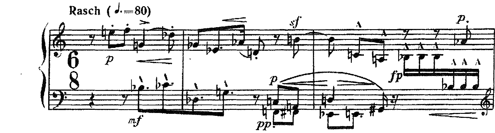

Due accordi e un soffio
L’analisi integrale scritta del sesto dei Sechs kleine Klavierstücke op. 19: dall’ascolto alla tesi, dai quattro piani al testo.
il “recitativo” appena abbozzato che sorge già muto (quasi solo interiezione) nella statica fissità degli accordi per quarte del sesto pezzo
G. Salvetti, La nascita del Novecento, p. 194
Lezione di due ore. Seconda ora: Analisi: la serie e le sue forme — Schönberg, Suite op. 25. I compiti per casa sono alla fine.
L’analisi integrale scritta di un brano atonale
B4L’atonalità e la numerazione dei dodici suoni, pp. 262–263 · Cla seconda prova, p. 270 · D. D’Urso, C. Bertolini, Il linguaggio della musica, 5° anno (Mondadori Education 2022). Il metodo degli insiemi è quello della lezione 2 (I. Bent, Analisi musicale, pp. 127–132).
1. Ogni insieme si nomina con le sue note, la battuta, la forma primaria e la sigla di Forte (3-9 [0, 2, 7]); i gradi e le sigle tonali non si usano, tranne per dire che un insieme ha le note di un accordo tonale. 2. La segmentazione si dichiara: si dice perché quelle note formano un gruppo (un accordo, una mano, un registro, una figura fra due pause). Bent avverte che dalla segmentazione dipende l’intera analisi (p. 132). 3. Il registro, la durata, la dinamica e il modo d’attacco si scrivono accanto agli insiemi, perché il metodo non li vede e il pezzo li usa per separare i materiali. 4. Prima il dato con la battuta, poi l’interpretazione; le indicazioni dell’autore in corsivo, come stampate.
Un elenco di sigle senza tesi. «B. 1: 3-7; b. 2: 3-9; b. 3: 4-27» è una scheda, non un’analisi: il testo deve dire che cosa quegli insiemi fanno nel pezzo, quali tornano, quali compaiono una volta sola, e perché.
L’ascolto, l’intestazione, la tesi

- ① a: 3-7
- ② b. 1: b: 3-9
- ③ bb. 1–2: a + b: 6-Z12
- ④ b. 3: re♯5: 4-27; re♯6–mi6, pppp
- ⑤ b. 5: b trasportato: do–fa–si♭, 3-9
- ⑥ b. 6: sol♯–sol–fa♯: 3-1; corona

- ① b. 7: do♯3: il dodicesimo suono; do♯–re–fa♯–mi♭, 4-4
- ② b. 8: destra: 5-13
- ③ b. 9: a e b insieme, ppp
Arnold Schönberg, Sechs kleine Klavierstücke op. 19 n. 6, per pianoforte, composto nel 1911, l’ultimo della raccolta. 4/4, Sehr langsam. Un levare e nove battute. Secondo Galli il pezzo è un omaggio a Gustav Mahler, morto un mese prima della composizione (Storia della musica 3, p. 326). Edizione: la scansione del catalogo (A24–A25), da cui si citano le indicazioni d’esecuzione.
Introduzione. Il pezzo è costruito su due accordi di tre suoni, la–fa♯–si (3-7) e sol–do–fa (3-9), che non cambiano mai disposizione né registro, e intorno ai quali tutto il resto compare una volta sola. La tesi è che l’op. 19 n. 6 sia una cornice immobile intorno a un tentativo di melodia, che il pezzo prima annuncia, poi realizza per una battuta e infine riassorbe. I due accordi formano insieme 6-Z12, l’insieme che Forte chiama il motto della composizione; la figura acuta re♯6–mi6 della b. 3, la linea della b. 7 e le terzine della b. 8 sono i soli eventi melodici, e il totale cromatico si completa proprio nella linea della b. 7, a due battute dalla fine.
La scheda dei quattro piani, da soli
Con l’ascolto appena fatto e la trascrizione della slide precedente, si riempie la scheda (unità 1, lezione 4) soltanto per tre righe. 1. La forma: le sezioni con le battute d’inizio e di fine, e che cosa torna. 2. Gli insiemi: per ogni sezione gli insiemi principali, con la sigla. 3. I registri e le dinamiche: dove si trova ciascun materiale e con quale indicazione. La correzione sono le cinque slide seguenti, che si leggono in classe e si rileggono a casa.
Piano 1 · Altezze, registro, ritmo, dinamica
Altezze. L’accordo della destra, la4–fa♯5–si5, entra in levare (b. 0) ed è la classe 3-7 [0, 2, 5]; sul terzo movimento della b. 1 la sinistra aggiunge sol3–do4–fa4, la classe 3-9 [0, 2, 7]: due quarte sovrapposte. Insieme formano 6-Z12 (The Structure of Atonal Music, p. 101). Alla b. 3 il re♯5 della destra fa dell’accordo acuto un tetracordo, re♯–fa♯–la–si (4-27), che ha le note di una settima di dominante su si; nello stesso momento la sinistra, sopra la destra, suona re♯6–mi6 e mi6–re♯6. Alla b. 5 do4–fa4–si♭4 prende il posto dell’accordo acuto: è 3-9, sol–do–fa trasportato una quarta sopra. Per un movimento le due forme di 3-9 suonano insieme, sol3–do4–fa4–si♭4, tre quarte sovrapposte (4-23); poi la sinistra passa a mi2–re3 e alla linea sol♯3–sol3–fa♯3 (3-1). Alla b. 7 il re5 della destra salta al do♯3, che continua re3–fa♯3–mi♭3 (4-4): il do♯ è il dodicesimo suono, l’ultimo che mancava. La b. 8 sovrappone due terzine: la destra re4–sol♯4–do5 con mi4 e mi♭4 nella voce interna (5-13), la sinistra do♯3–si3 con fa♯3 e sol3 nel mezzo (4-16). La b. 9 riporta i due accordi iniziali e, al grave, si♭2–la♭1.
Registro. Ogni materiale ha il suo spazio. L’accordo 3-7 occupa la4–si5, l’accordo 3-9 sol3–fa4, sotto il primo e senza sovrapporsi; la figura re♯6–mi6 è il punto più acuto del pezzo, la nona si♭2–la♭1 il più grave. Il pezzo si allarga dal centro verso i due estremi, e lo fa per eventi singoli: il registro acuto è toccato una volta (bb. 3–4), il grave una volta (b. 9), e la linea della b. 7 è l’unico gesto che attraversa i registri, quasi due ottave in un salto.
Ritmo e metro. Il 4/4 non si sente come metro: gli accordi entrano su movimenti diversi (b. 0 sul quarto, b. 1 sul terzo, b. 3 sul secondo) e sono tenuti per legature attraverso le stanghette. Le sole durate brevi sono le crome della figura acuta (bb. 3–4) e le terzine delle bb. 7–8, per le quali Schönberg scrive genau im Takt («esattamente a tempo»): l’unico punto in cui il pezzo chiede un ritmo misurato è anche l’unico in cui c’è un ritmo da misurare.
Dinamica. Tutto il pezzo sta sotto il p: pp l’accordo iniziale, pppp la figura acuta, p il re♯5 accentato della b. 3 e la linea della b. 7 (mit sehr zartem Ausdruck, «con espressione molto delicata»), pp le terzine, ppp il ritorno degli accordi, wie ein Hauch («come un soffio»), con il pppp della nona grave e la corona. La dinamica più forte non sta dove il pezzo è più denso, ma dove nasce la sola melodia.
Piano 2 · Il materiale e le sue trasformazioni
Il pezzo impiega quattro materiali. a e b sono i due accordi, che non cambiano mai di altezza né di disposizione: cambiano soltanto il punto della battuta in cui entrano e la durata (Galli: «modificati solo metricamente e ritmicamente», p. 326). c è la figura acuta re♯6–mi6 delle bb. 3–4, due note in semitono, pppp, che Galli chiama il «tentativo frustrato» di produrre un’idea melodica (ibidem). d è la linea per semitoni e piccoli intervalli che compare nel registro medio-grave: sol♯–sol–fa♯ (b. 5), do♯–re–fa♯–mi♭ (b. 7), le terzine della b. 8.
Le trasformazioni riguardano soltanto b e d. L’accordo per quarte è il solo materiale trasportato (b. 5, una quarta sopra), e la trasposizione lo porta nel registro di a, che dal terzo movimento della b. 5 tace: per un movimento le due forme di 3-9 si sommano in tre quarte sovrapposte (4-23), poi resta un solo accordo, do–fa–si♭, tenuto fino alla corona, e sotto di esso nasce la prima linea. La linea d, a sua volta, cresce: tre suoni alla b. 5, quattro alla b. 7; alla b. 8 si sdoppia nelle terzine delle due mani, finché è riassorbita dal ritorno degli accordi. Il principio unificante è il semitono: re♯–mi in c, sol♯–sol–fa♯ e do♯–re in d, mi–mi♭ e fa♯–sol nelle terzine. Gli accordi a e b, presi uno per uno, non contengono semitoni (vettori 011010 e 010020): la differenza fra la cornice e ciò che vi accade dentro è scritta già nel contenuto intervallare.
Chiamare «tema» l’accordo iniziale. Nel pezzo non c’è un tema che si sviluppa: c’è un oggetto fisso, che torna identico, e una linea che nasce e cresce. Si scrive «materiale», e si dice se torna, se è trasportato, se si trasforma.
Piano 3 · La forma: un levare, nove battute, tre momenti
| Sezione | Battute | Materiale | Insiemi | Registro | Indicazioni |
|---|---|---|---|---|---|
| Esposizione | 0–4 | a, b; c sopra a e b | 3-7, 3-9 → 6-Z12; 4-27 (b. 3) | sol3–si5; re♯6–mi6 | Sehr langsam, pp; pppp; p |
| Trasformazione | 5–6 | b trasportato; d (prima linea) | 3-9 (T5); 4-23; 3-1 | la4–si5, poi mi2–si♭4 | corona (b. 6) |
| Linea | 7–8 | d: linea e terzine | 4-4; 5-13 e 4-16; totale cromatico (b. 7) | do♯3–re5 | p, mit sehr zartem Ausdruck; genau im Takt, pp |
| Ritorno | 9 | a e b; nona grave | 6-Z12; si♭–la♭ | la♭1–si5 | ppp, wie ein Hauch; pppp; corona |
La forma è circolare: i due accordi aprono e chiudono, e nel mezzo il pezzo passa dall’accordo alla linea. Le proporzioni sono decrescenti: quattro battute e un levare per l’esposizione, due per la trasformazione, due per la linea, una per il ritorno; la corona della b. 6 divide il pezzo in due parti di diversa natura, la prima fatta di accordi tenuti, la seconda di movimento. Il ritorno della b. 9 non è una ripresa nel senso tonale: non conclude un percorso armonico, ma ripresenta gli oggetti dell’inizio dopo che il totale cromatico è stato completato, e li affida alla dinamica più debole del pezzo.
Una seconda lettura è possibile: considerare le bb. 5–8 una sola sezione centrale, perché la linea d comincia alla b. 5. La tabella separa le bb. 5–6 dalle bb. 7–8 per la corona e per il cambio di scrittura (accordo tenuto sopra la linea, poi linea sola); la lettura in tre parti, A B A′, è altrettanto difendibile purché lo si dica.
Piano 4 · Stile e contesto
Le sei miniature dell’op. 19 sono del 1911. Salvetti le pone fra i «vertici indiscussi» della «metafisica sonora» di Schönberg (La nascita del Novecento, p. 179) e le descrive come una serie di «frustrazioni» delle funzioni tradizionali del discorso musicale: la melodia troncata appena abbozzata, il ritmo costante negato, il canto e l’accompagnamento rovesciati, e nel sesto pezzo un «recitativo» appena accennato «che sorge già muto (quasi solo interiezione) nella statica fissità degli accordi per quarte» (p. 194). Surian colloca la raccolta nella «ricerca della massima concentrazione espressiva in pezzi di breve, a volte brevissima, durata» che Schönberg condivide con Berg e Webern (Manuale di storia della musica, IV, p. 129): i Fünf Sätze op. 5 di Webern (lezione 8) sono di due anni prima.
Galli definisce le immagini sonore della raccolta «istantanee psichiche» e riporta il giudizio di Stuckenschmidt, per il quale i valori emotivi dei «brevissimi, aforistici» pezzi op. 19 «superano di gran lunga, per intensità di espressione, la norma classica o romantica» (H. H. Stuckenschmidt, La musica moderna, Einaudi 1965, pp. 34–35, cit. in Galli, Storia della musica 3, p. 326). Nel sesto pezzo l’attenzione, scrive Galli, «si decentra su aspetti “marginali” — il singolo evento fonico, le fasce sonore che crea, la pregnanza delle sfumature dinamiche, il silenzio conclusivo della pausa» (p. 327).
L’analisi conferma e precisa questi giudizi. La «fissità» degli accordi per quarte è un dato misurabile: due insiemi che non cambiano mai di altezza, e di cui uno solo è trasportato, una volta. Il «recitativo muto» è la linea d, che nasce nel registro grave e non arriva mai a un profilo melodico compiuto. Il legame con il linguaggio tonale non è del tutto reciso: la b. 3 contiene le note di una settima di dominante e il semitono re♯–mi della sensibile, senza risoluzione; e l’accordo per quarte ha un precedente nella Kammersymphonie op. 9 (1906) e nell’op. 11 n. 1 (lezione 1). Quanto all’omaggio a Mahler, la partitura non lo dichiara: è un dato della storia del pezzo, non della sua scrittura, e l’analisi non deve cercarne la traccia nelle note.
Conclusione
I dati dei quattro piani convergono sulla tesi. I due accordi, 3-7 e 3-9, sono la cornice: entrano per primi, tornano per ultimi, non cambiano mai disposizione e non contengono semitoni. Dentro la cornice il pezzo costruisce, per gradi, una melodia: due note acute e ritirate (b. 3), tre semitoni sotto un accordo (b. 5), una linea di quattro suoni che completa il totale cromatico (b. 7), due terzine sovrapposte (b. 8). Quando la melodia è compiuta, gli accordi tornano e la cancellano. Resta aperta una questione che la partitura non decide: se il si♭2–la♭1 della b. 9, l’unico intervallo che non appartiene a nessun materiale, sia l’ultima traccia della linea d o un evento nuovo, l’unico, collocato dopo la fine.
A. Schönberg, Sechs kleine Klavierstücke op. 19, scansione del catalogo (A24–A25); trascrizione MusicXML del progetto. A. Forte, The Structure of Atonal Music, Yale University Press 1973, p. 101. I. Bent, Analisi musicale, pp. 127–132. G. Salvetti, La nascita del Novecento, pp. 179, 194. E. Surian, Manuale di storia della musica, vol. IV, p. 129. C. Galli, Storia della musica 3, pp. 326–327. D. D’Urso, C. Bertolini, Il linguaggio della musica, 5° anno, Mondadori Education 2022, pp. 262–263, 270.
Dalla scheda al testo: il paragrafo sulle bb. 7–9
Scrivi in prosa, in sei-otto righe, il paragrafo d’analisi delle bb. 7–9: la linea della b. 7 (note, insieme, registro, indicazione), le terzine della b. 8 (le due mani, l’insieme della destra, l’indicazione), il ritorno della b. 9 (che cosa torna, che cosa è nuovo, la dinamica). Ogni affermazione con la battuta.
Sintesi
Nell’op. 19 n. 6 due accordi fissi, 3-7 e 3-9 (insieme 6-Z12), fanno da cornice a una linea che nasce nelle bb. 3–5, si compie alla b. 7 con il dodicesimo suono e scompare al ritorno degli accordi (b. 9). La cornice non ha semitoni; la linea è fatta di semitoni.
La sigla è il punto di partenza, non la conclusione. Il testo dice che cosa torna e che cosa no, dove sta ogni materiale, con quale dinamica e con quale durata, e costruisce su questi dati una tesi che si possa verificare battuta per battuta.
Con questa lezione si chiude l’unità sull’atonalità libera. L’unità seguente è dedicata alla serie dodecafonica e a ciò che viene dopo la serie.
Dodici suoni, quattro forme
La serie dodecafonica, le sue trasformazioni, e come la si ritrova in una partitura: le prime tre battute della Suite op. 25 di Schönberg.
La serie nella forma ed altezza originale acquista una posizione analoga a quella della “tonalità principale” nella musica precedente
A. Webern, conferenza del 26 febbraio 1932, in E. Surian, Manuale di storia della musica, IV, p. 125
La serie e le sue quattro forme
B23Il sistema cromatico e la dodecafonia, pp. 262–265 · D. D’Urso, C. Bertolini, Il linguaggio della musica, 5° anno. La dodecafonia, pp. 123–127 · E. Surian, Manuale di storia della musica, vol. IV.
Serie. Una successione dei dodici suoni della scala cromatica, ciascuno una volta, scelta dal compositore: l’ordine delle note, «una volta definito, diventa la struttura di riferimento per tutto il brano» (D’Urso, 5° anno, p. 262). Il libro la scrive anche in numeri, con il do = 0 e il si = 11 (pp. 262–263).
Le quattro forme. O, la serie originale; I, l’inversione, che rovescia la direzione di ogni intervallo; R, il retrogrado, la serie letta dall’ultima nota alla prima; RI, il retrogrado dell’inversione (Surian, IV, p. 124). Ognuna si può cominciare da ciascuno dei dodici suoni: «vi sono, dunque, sempre a disposizione 48 versioni di una stessa serie» (p. 125).
Due regole del sistema. Il brano si scrive senza armatura, con l’alterazione accanto a ogni nota, bequadri compresi; i suoni non si ripetono prima che la serie sia completata, tranne le note ribattute e quelle ornamentali (D’Urso, 5° anno, p. 263).
Costruire l’inversione rovesciando le note invece degli intervalli. L’inversione comincia dallo stesso suono di O e procede con gli stessi intervalli in direzione contraria: a mi–fa (un semitono su) risponde mi–mi♭ (un semitono giù), a fa–sol (un tono su) mi♭–re♭ (un tono giù).
La serie dell’op. 25: tre gruppi di quattro suoni
La serie della Suite è mi–fa–sol–re♭–sol♭–mi♭–la♭–re–si–do–la–si♭. Surian ricorda che tutti i movimenti della Suite, eccetto l’Intermezzo, sono costruiti «in base alla stessa serie dodecafonica […] suddivisa in tre gruppi» (IV, p. 127): i gruppi sono tre tetracordi, mi–fa–sol–re♭, sol♭–mi♭–la♭–re, si–do–la–si♭. Il libro chiama questa operazione suddivisione della serie e la attribuisce, come metodo di lavoro, a Carlo Jachino: dodici suoni in tre gruppi di quattro, o in due di sei, o in quattro di tre, che si possono usare uno come melodia e un altro come accordo (D’Urso, 5° anno, p. 264).
Due proprietà della serie hanno conseguenze in partitura. Il primo e l’ultimo suono, mi e si♭, sono a distanza di tritono: la forma O da mi e la stessa forma trasportata di sei semitoni, da si♭, cominciano e finiscono sugli stessi due suoni scambiati. E ogni tetracordo contiene un intervallo di tritono o di semitono che lo rende riconoscibile all’orecchio: sol–re♭ nel primo, la♭–re nel secondo, si–do e la–si♭ nel terzo. Il tritono, scrive Webern nella stessa conferenza da cui viene la frase della copertina, «acquista grande significato» al posto della dominante (Surian, IV, p. 125).
O da mi: 4 5 7 1 6 3 8 2 11 0 9 10. O da si♭ (si somma 6 a ogni numero, ripartendo da 0 dopo l’11: è il procedimento con cui il libro trasporta la serie dell’op. 27, pp. 263–264): 10 11 1 7 0 9 2 8 5 6 3 4.
La partitura: il Präludium, bb. 1–3

- ① b. 1: destra, 1–4: mi fa sol re♭
- ② b. 2: destra, 5–8: sol♭ mi♭ la♭ re; poi il 9, si
- ③ b. 3: destra, 10–12: do la si♭, e il si♭ ribattuto
In tre battute la destra espone la serie intera, un tetracordo per battuta: mi–fa–sol–re♭ alla b. 1, sol♭–mi♭–la♭–re alla b. 2, il si legato e do–la–si♭ alla b. 3. Ogni tetracordo cambia registro: il primo sta nell’acuto, il secondo nel registro medio, il terzo scende verso il grave. Il si♭, ultimo suono, è ribattuto tre volte in semicrome, fp: è la ripetizione che il libro ammette, la nota ribattuta (p. 263).
Leggere la serie in partitura: la sinistra
La sinistra entra sul secondo movimento della b. 1, con si♭–do♭, e prosegue con re♭–sol (b. 2): è il primo tetracordo della serie da si♭, scritto con il do♭ al posto del si naturale. Poi la sinistra si divide in due voci. La superiore suona do–la alla b. 2 e re–sol♯ alla b. 3, il secondo tetracordo (con il sol♯ al posto del la♭); l’inferiore, negli stessi movimenti, fa–fa♯ e mi♭–mi, il terzo. I due tetracordi sono suonati insieme: la serie si legge in verticale, a bicordi, come Surian dice in generale della serie, «presentata sia in successione (cioè come melodia) che simultaneamente (cioè come armonia e contrappunto), in qualsiasi ottava e con qualunque ritmo» (IV, p. 123).
Le due mani suonano dunque la stessa serie a distanza di tritono, O da mi e O da si♭, e se ne scambiano gli estremi: la destra comincia sul mi e finisce sul si♭, la sinistra comincia sul si♭ e finisce sul mi. Dentro ciascun tetracordo l’ordine dei suoni è quello della serie; fra le due voci della sinistra no: il mi, dodicesimo suono, suona prima del sol♯, ottavo, perché sta nell’altra voce. È il primo caso di una cosa che tornerà in tutta l’unità: la serie fissa i suoni e il loro ordine dentro ciascun gruppo, il compositore decide la mano, il registro, il ritmo e che cosa suona insieme.
Cercare la serie leggendo la partitura da sinistra a destra, nota dopo nota, come una melodia sola. In una scrittura a più voci la serie va cercata voce per voce e tetracordo per tetracordo; le note scritte con un nome diverso (do♭ per si, sol♯ per la♭) sono lo stesso suono.
Il Minuetto, all’ascolto
Due ascolti. Sul quaderno: 1. dove finisce il Minuetto e comincia il Trio, e da che cosa lo si sente; 2. che cosa resta del minuetto classico (metro, frasi, ripetizioni) e che cosa no.
Per Salvetti l’avvento della dodecafonia ha il suo «atto ufficiale» proprio nella Suite op. 25, del 1923 (La nascita del Novecento, p. 182), e il nuovo metodo comporta uno stile «vistosamente irriducibile alle opere espressioniste: recupero di forme musicali classiche e addirittura barocche, animate da una ritmica quasi regolare» (p. 213). La Suite è una serie di danze: Präludium, Gavotte, Musette, Intermezzo, Minuetto con Trio, Gigue. Il Minuetto è in 3/4, Moderato (semiminima = 88 circa), e dopo il Trio la partitura scrive Menuett da capo.
Al lavoro: la sinistra, suono per suono
Sulla partitura delle bb. 1–3 scrivi sopra ogni nota della sinistra il suo numero d’ordine nella serie da si♭. Poi indica le due coppie di note che suonano insieme e appartengono a tetracordi diversi.
Sintesi
Dodici suoni in un ordine fisso; quattro forme (O, I, R, RI), ciascuna su dodici altezze: 48 versioni. Nell’op. 25 la serie è divisa in tre tetracordi, e nelle prime battute del Präludium le due mani suonano O da mi e O da si♭, a distanza di tritono.
Si individua la forma e il suo primo suono; si numerano i suoni voce per voce; si osserva che cosa il compositore decide al di là della serie: registro, ritmo, mano, simultaneità, ripetizioni ammesse.
La lezione si chiude con il solfeggio: si legge a nomi, in tempo, la destra delle bb. 1–3 del Präludium, battendo i due movimenti del 6/8. La seconda ora di oggi è un’ora intera di interrogazioni; la serie torna nell’op. 27 di Webern alla lezione 8.
Compiti per la prossima volta
1 · Scritto: Le quattro forme della serie, da un altro suono
Scrivi le quattro forme della serie dell’op. 25 (O, I, R, RI) trasportata sul si♭.
Sul quaderno, a matita. La foto del lavoro finito va su Classroom. Nel Workbook: apri l’esercizio C5-U8-L1-01 ↗
Compiti per la prossima volta
2 · Solfeggio e 3 · dettato
n. 466 e n. 467 parlato · n. 468 e n. 469 cantato · n. 470 e n. 471 ritmico
Ogni pezzo a tempo, senza fermarti: il parlato a nomi, il cantato prendendo il primo suono dalla tastiera, il ritmico battendo la pulsazione.
Scrivi la melodia sul quaderno, in chiave di violino: otto battute in 2/2, fa♯ minore. Il primo suono è do♯. Prima il riferimento, poi tutto due volte, ogni coppia di battute due volte, il collegamento 1–4, 3–6 e 5–8, e tutto per controllare.
Il riferimento: accordo di tonica e primo suono
Il dettato · otto battute
Le sezioni (riferimento, tutto, le coppie, il collegamento) si ascoltano una per una e si ripetono quanto serve; le fasi fanno la procedura della classe, con gli annunci e le pause, da qualunque punto.
Sul quaderno scrivi in testa la sigla C5-D-U08-L1. Si corregge all’inizio della prossima lezione.
Compiti per la prossima volta
Scrittura: contrappunto e armonia
Scrivi un contrappunto di quinta specie (il contrappunto fiorito) sopra il canto fermo, in modo dorico (finale re): otto battute. Comincia su una consonanza perfetta, alla cadenza la sensibile sale alla finale, niente quinte e ottave consecutive.
Sul quaderno, con la sigla C5-CP-U08-L1 in testa; la foto va su Classroom.
Realizza a quattro parti il basso senza numeri: sedici battute in 4/4, la maggiore. Trova tu l’accordo di ogni nota (la regola dell’ottava è il punto di partenza) e scrivilo sotto; poi il soprano, poi le voci interne. Accordi che puoi usare: tutto quello studiato, e una modulazione a un tono vicino.
Sul quaderno, con la sigla C5-BD-U08-L1 in testa; la foto va su Classroom.
Armonizza a quattro parti il canto dato: sedici battute in 4/4, la maggiore. Prima le cadenze, poi il basso per intero, e solo alla fine contralto e tenore. Accordi che puoi usare: tutto quello studiato, e una modulazione a un tono vicino. La melodia modula: trova dove, e in quale tonalità arriva.
Sul quaderno, con la sigla C5-CD-U08-L1 in testa; la foto va su Classroom.
Testo per il registro elettronico
Scritto: Le quattro forme della serie, da un altro suono (Workbook, esercizio C5-U8-L1-01), sul quaderno; la foto va su Classroom. Solfeggio dal quaderno di lettura: parlato n. 466, 467; cantato n. 468, 469; ritmico n. 470, 471 (a tempo, senza fermarsi). Dettato C5-D-U08-L1 dalla pagina della lezione (sezioni da ascoltare, o le fasi della procedura guidata), sul quaderno con la sigla. Contrappunto di quinta specie sul canto fermo (C5-CP-U08-L1). Basso senza numeri da realizzare a quattro parti (C5-BD-U08-L1). Canto dato da armonizzare a quattro parti (C5-CD-U08-L1).
In classe
Leggiamo insieme: parlato
A nomi, a tempo, con la mano che batte. Chi si ferma riparte dalla battuta dopo.
Apri il n. 462 nel quaderno di lettura ↗ chiave di contralto · 4/4 · do maggiore
In classe
Leggiamo insieme: cantato
Si prende il tono dalla tastiera, si canta insieme; poi a gruppi.
Apri il n. 463 nel quaderno di lettura ↗ chiave di violino · 3/4 · re maggiore
Apri il n. 464 nel quaderno di lettura ↗ chiave di violino · 6/8 · sol minore
In classe
Leggiamo insieme: ritmico
Tutti insieme, battendo la pulsazione. Poi a file, due battute a testa.